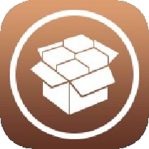
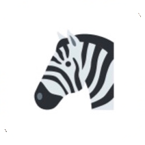

Cydia

Sileo

Zebra
Installer
DarkPapers is a tweak that adds over 50 OLED friendly and Full HD day/night wallpapers (with many more coming in future updates) into the iOS 13 native dark mode wallpaper switch (apperance aware feature).
No setting up is required, simply install the tweak and go to the wallpaper section in the settings app and look in the still wallpapers to see your new dark mode compatible wallpapers.
TapMe allows you to bring life to your icons and folders by giving them sound and haptic feedback when you tap them.
With TapMe, you can select a sound from a variety of nearly 30 different sounds. You'll be able to pick one of the hilarious sounds, or something more natural and down-to-earth.
When changing the sound or the haptic feedback, you don't even need to respring. It's as quick as that. Simply choose and that's it.
You can even add up to 3 different custom sounds to TapMe! But that's not everything, you can also change the sound's haptic feedback between Light, Medium and Heavy. Or you can disable it entirely.

Shake2Toggle lets you use your device's shake detection for far more things. With Shake2Toggle you can decide what to have your device do for you when you shake it.
With some available options, you can choose from a variety of actions to be performed when you shake your device. Shake2Toggle lets you shake to shuffle, take a screenshot, open an app, toggle dark mode and many more actions.
Shake2Toggle works by detecting any shakes, however, you can easily only give your device a good twist with your wrist and it'll detect it as a shake too. No need to shake your device into oblivion, an easy shake will do it.

CacheClearerX is the modern successor of CacheClearer, originally created by Ryan Petrich and modified by julioverne.
CacheClearerX still has the original feature, which adds two buttons in the storage settings. Simply select an application and you'll see two options: Clear Cache and Reset App.
CacheClearerX now has a new feature. Easily clear an application's cache simply by 3D-Touching/Force Touching the application's icon in your homescreen.
You can also disable this implementation or it's haptic feedback and/or alert in the preferences pane.
FortuneCookie sends an alert with a random fortune from the cookie whenever you shake your device. Don’t forget to enable FortuneCookie in the settings though.
There are over 200 hundred different fortunes in the cookies. They get randomized, so you may get the same fortune more than once or you may get several different fortunes.
To add custom sounds, just place the sounds in /Library/FreeFall and select them in Settings -> FreeFall. Simple like that.
FortuneCookie has several different fortunes, some are inspirational and uplifting, while others are dark and insulting. There’s also a few references there, see if you can get them.

SpotlightPls let’s you open/invoke Spotlight Search from anywhere by performing a gesture or a trigger. You can invoke Spotlight Search from within any app or webpage, no need to go back to the homescreen to open it, anymore.
With SpotlightPls you can choose which gesture(s) or trigger(s) you’d like to set in order to invoke Spotlight Search.
SpotlightPls has a real-time action, no delays to invoke Spotlight Search when performing a gesture/trigger.
Enjoy the Haptic Feedback that SpotlightPls integrates with the gestures and triggers. You can fully disable Haptic Feedback in case it’s not your style.
BegoneCIA lets you control your privacy by giving you a CC toggle to enable or disable your microphone, camera and GPS.
You can choose which apps you to block with BegoneCIA and which apps not to, easily select the desired applications from the preference pane in the settings of BegoneCIA.
FreeFall, originally created by Steven Rolfe back in the iOS 7 era, is a must have tweak for a good laugh. It makes your device scream when it's dropped... Or yell at you after the drop.
You can set your own custom sounds or change the volume of the sounds! The phone won’t scream when your device is set to silent, so no worries.
To add custom sounds, just place the sounds in /Library/FreeFall and select them in Settings -> FreeFall. Simple like that.